Mes projets
Projet Fin d'études
Mon projet de fin d'études consiste en la conception et la réalisation d'une voiture suiveur de ligne, une initiative qui marie la théorie académique à l'application concrète des connaissances acquises. Centré sur les principes de la robotique et de la programmation, j'ai opté pour la plateforme Arduino pour donner vie à ce projet innovant. Mon objectif était de créer un système intelligent capable de suivre une trajectoire prédéfinie avec précision en utilisant des capteurs de ligne. À travers des techniques avancées de programmation, j'ai développé un code embarqué sur Arduino permettant au robot de prendre des décisions en temps réel en fonction des données fournies par les capteurs.
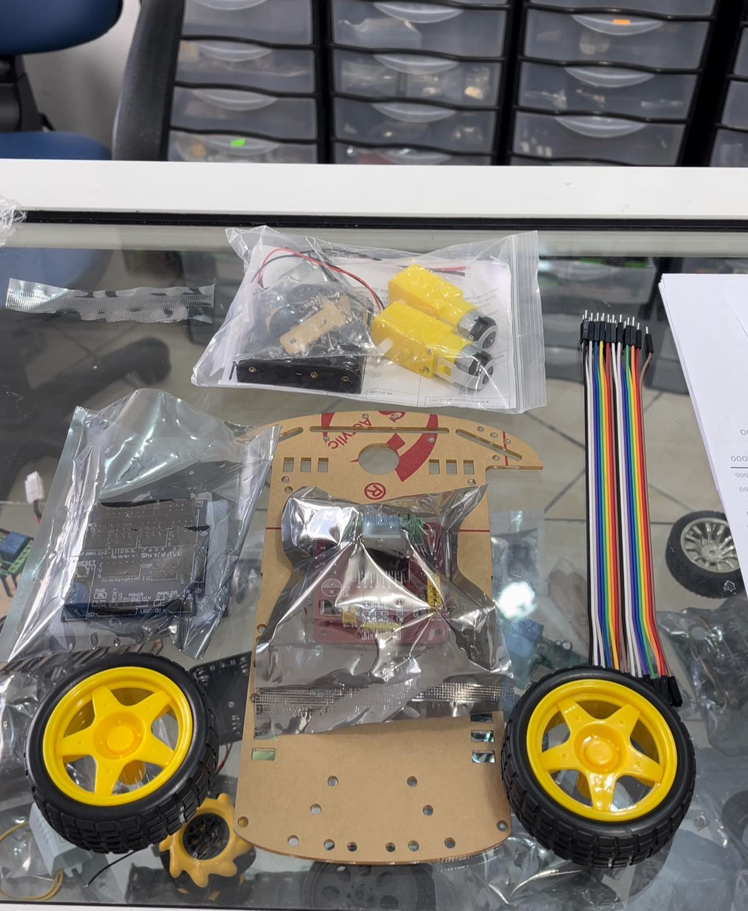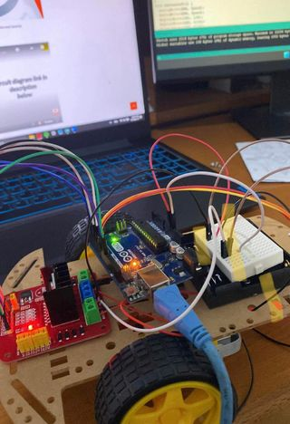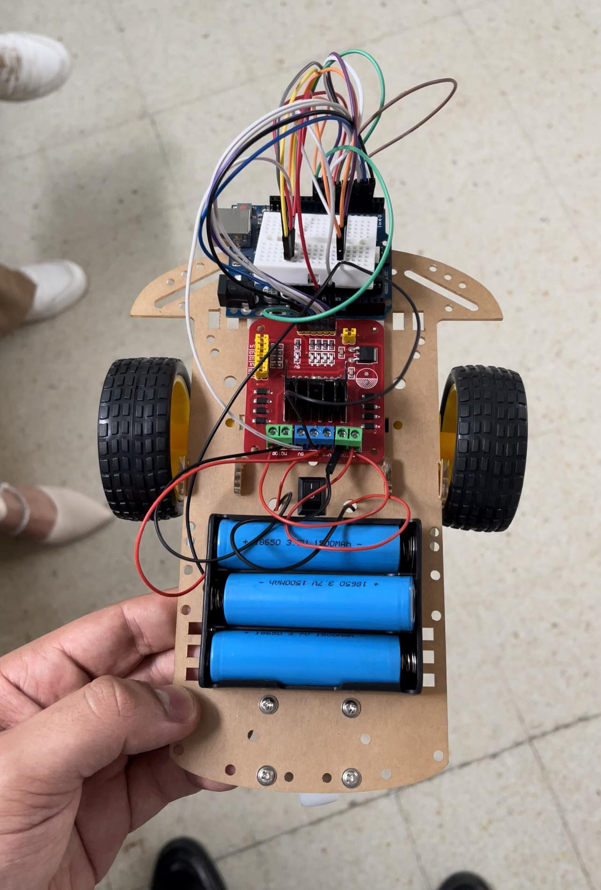 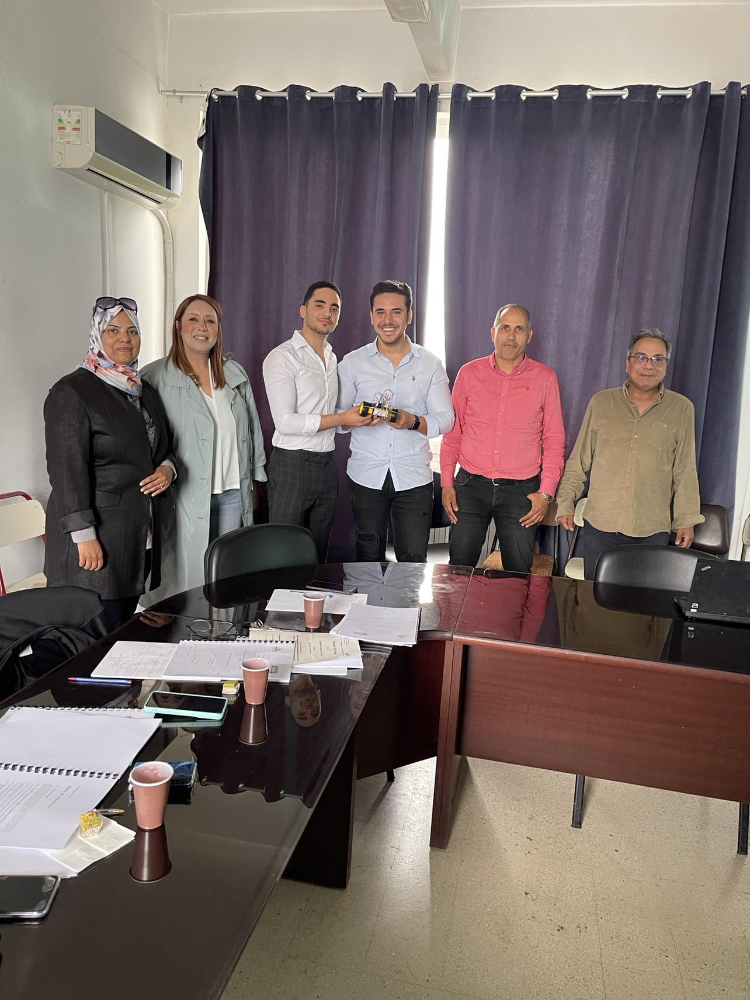
Forum d'entreprise
Au sein du forum d'entreprise, je suis ravi de partager mon engagement continu dans le développement professionnel. Récemment, j'ai eu l'opportunité enrichissante de participer à une formation axée sur la "Communication Efficace, le Storytelling et la Langue Corporelle".
Cette expérience a été particulièrement significative pour moi, car elle m'a permis d'acquérir des compétences essentielles en communication interpersonnelle, en narration persuasive et en compréhension approfondie du langage corporel.
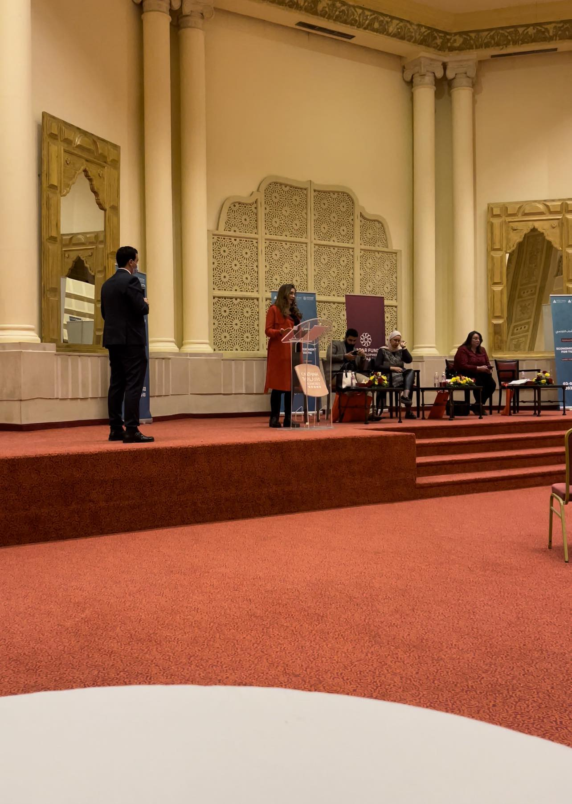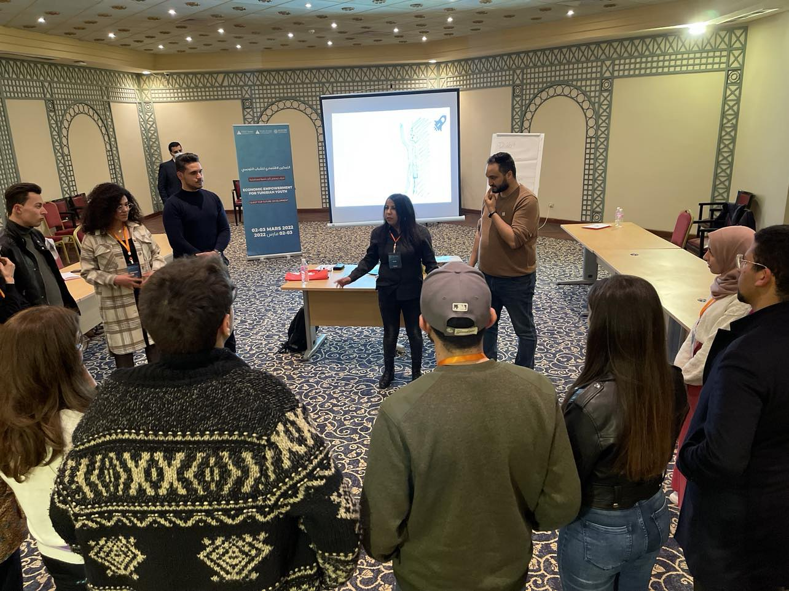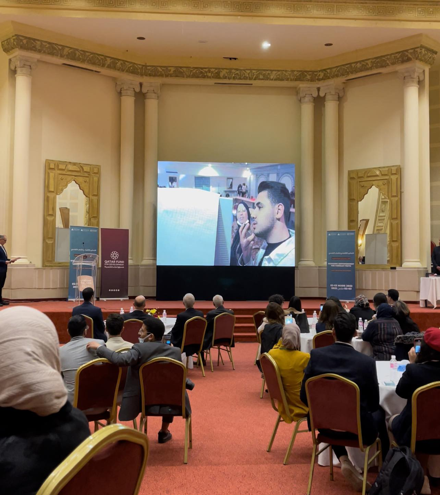 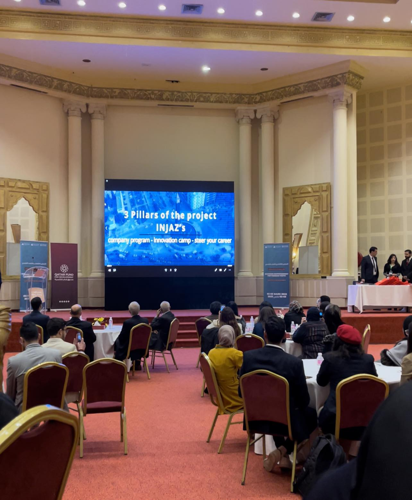
Dropshipping
Le dropshipping est un modèle d'affaires dans lequel le détaillant (le dropshipper) ne détient pas les produits qu'il vend en stock. Au lieu de cela, lorsque le détaillant vend un produit, il achète le produit auprès d'un tiers (généralement un grossiste ou un fabricant) et le fait expédier directement au client. Ainsi, le dropshipper n'a pas à gérer l'inventaire ni à traiter directement avec les produits physiques.
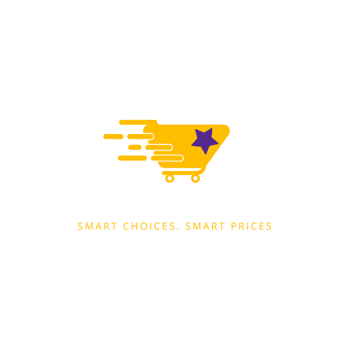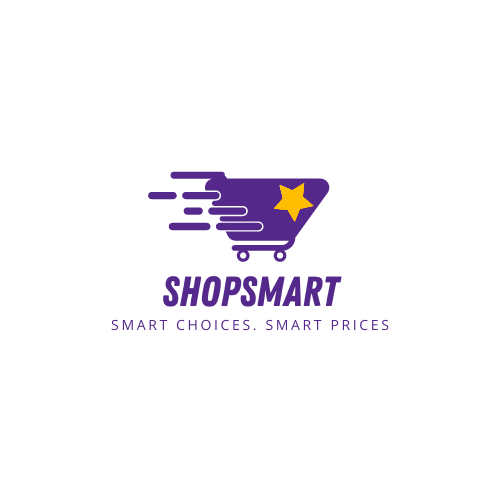
Online Business
Le business en ligne, également connu sous le nom de commerce électronique, englobe un large éventail d'activités commerciales réalisées sur Internet. Cette modalité commerciale a considérablement évolué avec l'avancement de la technologie, offrant aux entrepreneurs et aux entreprises une plateforme mondiale pour vendre des produits et des services.
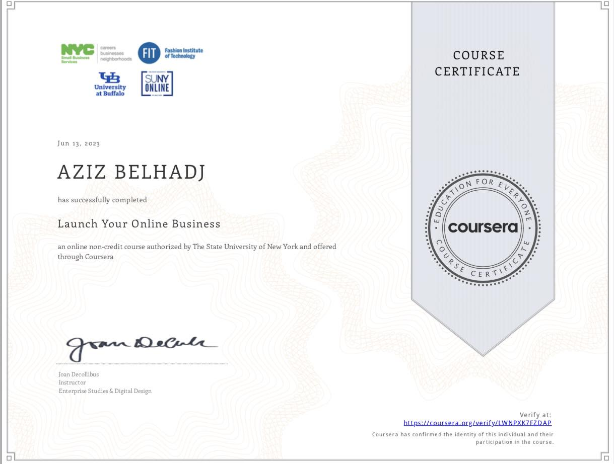